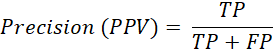
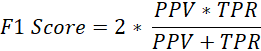
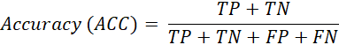

In order to evaluate a machine learning performance, we need to use well-defined parameters and insights. To compute the different evaluation metrics, we need to use four important parameters:
To explain the above parameters, let’s assume that we have a labeled classification dataset consists of normal and attack instances. Any single instance is classified as either TP, FP, TN or FN according to the following definitions.
TP = ATTACK scenario correctly identified as ATTACK.
FP = NORMAL scenario incorrectly identified as ATTACK.
TN= NORMAL scenario correctly identified as NORMAL.
FN = ATTACK scenario incorrectly identified as NORMAL.
The following evaluation metrics are used to quantify the classification performance.
Precision: Precision, or positive predictive value, is the ratio of attack samples that are correctly predicted divided by the total number of predicted ATTACK samples.

Recall: Recall, or the true positive rate, is the ratio of attack samples that are correctly predicted by the total number of actual ATTACK samples in the dataset. Also known as sensitivity or hit rate.
F1 Score: The F1-score, or F-measure, is a measure the harmonic mean of the precision and recall.

Accuracy: Accuracy is the ratio of the total correctly predicted samples divided by the total number of samples.
